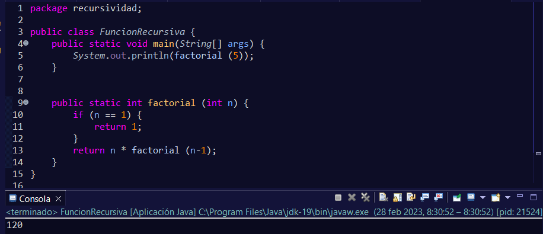
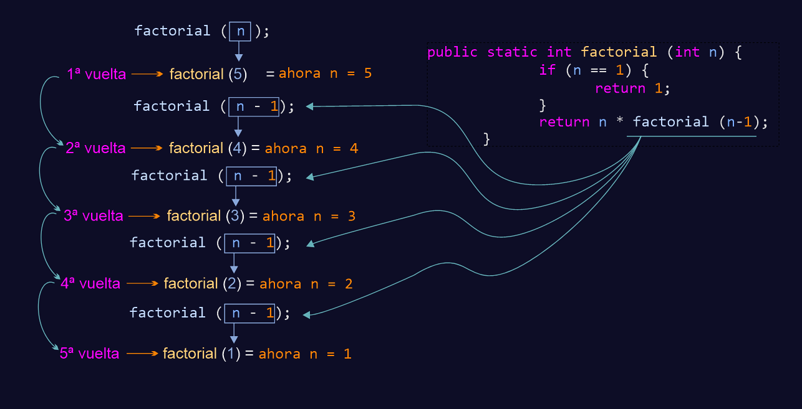
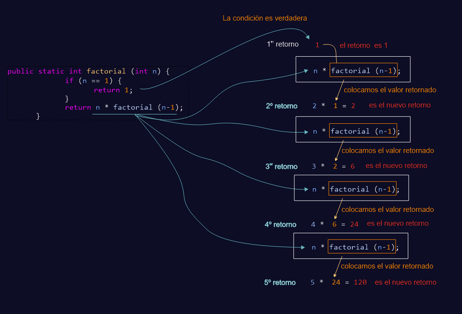
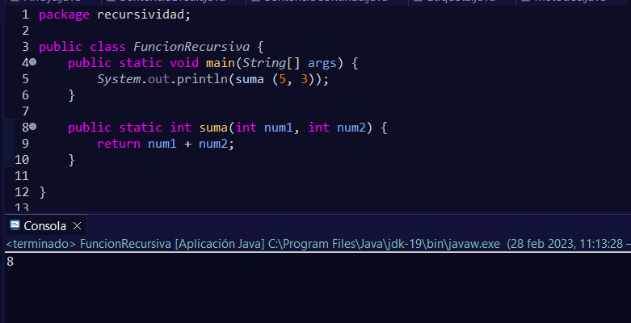

La recursividad permite que una función se llame a sí misma hasta que resuelve un problema.
Ésta tendrá un caso base que indicará cuándo debe finalizar. Si no lo hubiera se produciría un desbordamiento de pila (stack overflow).
Para ser más concretos, el caso base es la condición que hace que la función deje de llamarse y comience a regresar los valores de retorno que habían mientras se llamó a la función.
Un ejemplo común a la hora de explicar es el número factorial. Por ejemplo, para calcular el factorial de 5 sería 5! = 5·4·3·2·1 = 120. Esto representado en una función podría hacerse de la siguiente manera:
Cuando entra en main, debido al orden de prioridad, primero se evalúan los paréntesis. Como dentro de los paréntesis se invoca a la función factorial.
Para entender la función he realizado un esquema para que se puedan ver los pasos que se realizan:
Inicialmente n vale 5 ya que todavía no se ha ejecutado las sentencias que hay en su interior.
Cada vez que se introduce dentro de la función se le llama a esta reduciendo una unidad. Por lo tanto n va decrementándose, pero todavía no se devuelve ningún valor hasta que n no valga 1.
Cuando n vale 1, la condición se vuelve verdadera, y ahí ya no se llama a la función, por lo que comienzan los retornos de la función.
Puede ser un poco dificultoso entenderlo, pero si nos acordamos cuando teníamos una función suma y la imprimíamos lo que se mostraba era el valor de retorno:
En los paréntesis del método System.out.println(), tras finalizar la función suma(5, 3) se sustituye por su valor que es 8. Por lo que se podría interpretar como System.out.println(8);
Entonces cada vez que aparece la función cuando se devuelve el retorno, es como si tuviéramos solo el valor.
Si nos damos cuenta, el caso base en este caso será la condición de la estructura if que será la causante de que se acabe llamando más a la función.